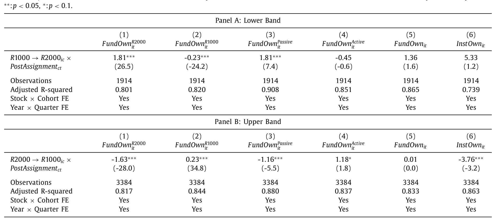
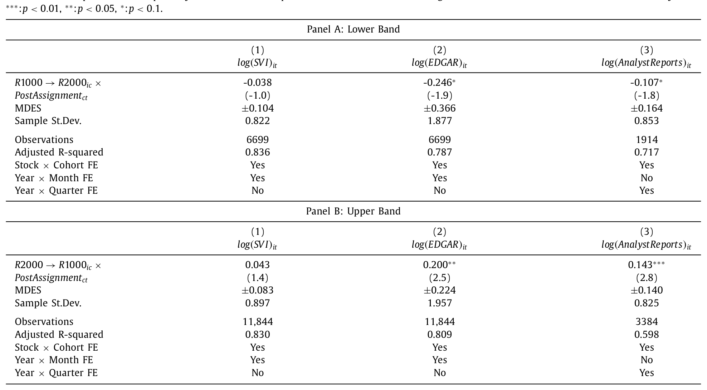
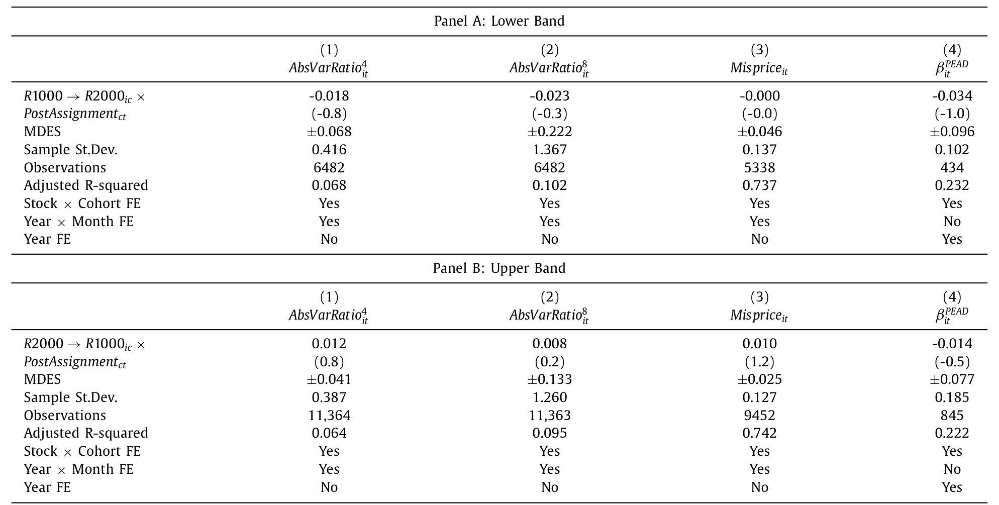
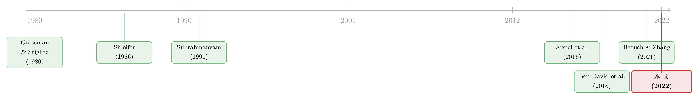

搭便车的人越来越多，价格却没有变笨
本文读的是 Coles, Heath & Ringgenberg (2022, Journal of Financial Economics)：用 Russell 指数重构作为外生冲击，作者发现指数投资上升会显著压低信息生产（Google 搜索 −3.8%、EDGAR 浏览 −24.6%、分析师报告 −10.7%），但价格的信息含量纹丝不动。指数化改变了投资者构成与交易行为，却没有动摇价格效率——因为主动投资者会内生地调整，直到「做研究」的回报回到原点。
1 不是所有人都能搭便车
先讲一个让很多人睡不着觉的数字。过去二十年，全球投向指数投资 (index investing) 的资本增加了将近 10 万亿美元（Investment Company Institute, 2021）。这件事本身没什么可怕，可怕的是它背后的逻辑：被动投资者天然是在搭便车——他们不研究、不分析，只是按指数权重买入，免费蹭着主动管理人辛辛苦苦挖出来的信息。
于是一个朴素的担忧浮上水面：如果越来越多的钱都不再做研究，价格里还会剩下多少「真相」？说得更直白一点——不是所有人都能指数化，总得有人去当主动投资者。那么，指数投资的崛起，到底有没有改变整个经济体的信息生产？如果有，它会不会侵蚀股价的信息效率？
这恰恰是 Grossman 与 Stiglitz 在 1980 年就盯上的那个悖论。如果市场是完全有效的、价格已经包含了一切信息，那么没有人有动机去花钱搜集信息；可一旦大家都不搜集信息，价格又凭什么有效？所以信息完全有效的市场是不可能存在的——均衡里必然有一群人付费做研究，正因为价格「不够」有效，才让他们的研究有利可图。
这是一篇很「干净」的论文，因为它做了一件别人没做的事：它不满足于讲故事，而是把 Grossman-Stiglitz 的框架请出来，扩展它、推出可检验的预测，再用一个外生冲击去逐条对照。它的结论也因此格外有分量——
信息生产确实塌了一大块，价格效率却一点没变。读完你会明白，这两件看似矛盾的事，其实是同一个均衡的两面。
2 把指数投资者请进 Grossman-Stiglitz
要理解这篇论文，必须先看懂它那个小而锋利的模型。它在经典的 Grossman and Stiglitz (1980) 之上，只加了一个选择：让投资者可以选择当被动的指数投资者。
设定是这样的。市场上有一种风险资产，一期之后的支付为 \(\tilde\theta + \tilde\epsilon\)，其中 \(\tilde\theta\) 是基本面价值。\(t=0\) 时，价格不敏感的噪声交易者 (noise traders) 提供 \(\tilde x\) 股；\(\tilde\theta,\tilde\epsilon,\tilde x\) 联合正态、互不相关，方差分别是 \(\sigma_\theta^2,\sigma_\epsilon^2,\sigma_x^2\)。
存在一个单位质量的原子化投资者，都是风险厌恶系数为 \(\psi\) 的 CARA 效用。每个人在三种身份里选一种：被动指数投资者、主动且公开信息型 (publicly-informed)、主动且私有信息型 (privately-informed)。当指数投资者的固定成本是 \(c_I\)，当主动投资者的固定成本是 \(c_A\)，选择指数化的比例记作 \(m\)。
指数投资者的需求是事前确定的：
$$X_{Index} = \frac{1}{\psi}\,\frac{E[\tilde\theta - \tilde P]}{\sigma_{Index}^2}$$
关键在于，指数投资者一共买 \(mX_{Index}\) 股，且与价格无关——他们是价格不敏感的。于是真正抛给主动投资者的净供给是 \(\tilde x - mX_{Index}\)。
剩下 \(1-m\) 的主动投资者，每个人再决定要不要额外掏一笔信息成本 \(c\) 去学那条非公开信号。掏了，就成为私有信息型，需求为：
$$X_I = \frac{1}{\psi}\,\frac{\theta - P}{\sigma_\epsilon^2}$$
不掏，就只能从价格里反推信息，成为公开信息型：
$$X_U = \frac{1}{\psi}\,\frac{E[\tilde\theta\,|\,P] - P}{\mathrm{Var}[\tilde\theta\,|\,P] + \sigma_\epsilon^2}$$
选择付费变成私有信息型的主动投资者比例记作 \(\lambda\)，所以私有信息型的质量是 \((1-m)\lambda\)，他们在信息生产上的总支出是 \((1-m)\lambda c\)。记住这个 \(\lambda\)，整篇论文的反转就藏在它身上。
均衡的核心条件是「三种身份带来的期望效用相等」——否则人们就会用脚投票，从一种身份转向另一种：
$$E\!\left[-e^{-\psi \tilde W_1}\,\big|\,X_{Index}\right] = E\!\left[-e^{-\psi \tilde W_1}\,\big|\,\tilde X_I\right] = E\!\left[-e^{-\psi \tilde W_1}\,\big|\,\tilde X_U\right]$$
接着，一个自然的问题是：在这个均衡里，价格到底有多「准」？作者沿用 Grossman-Stiglitz 的解法，求出价格 \(P\) 与基本面 \(\tilde\theta\) 的相关系数 \(\rho_\theta\)——这就是他们度量价格信息含量的尺子。而真正关键的一步，是这个相关系数长成了下面这个样子：
看出门道了吗？指数化的成本优势 \(c_I - c_A\)、以及选择指数化的比例 \(m\)，都没有出现在这个公式里。 也就是说，无论有多少人转去被动投资，价格的信息含量都不变。这就是模型最反直觉、也最核心的预测。
它怎么做到的？答案在两个 Remark 里：
- Remark 1：资产价格的波动率随指数投资者比例上升而上升。（这给了作者第一个可检验的「直接效应」。）
- Remark 2：指数投资的外生上升，不会改变选择搜集信息的主动投资者比例 \(\lambda\)。
直觉其实很朴素。指数化变便宜 → 更多人去做被动 → 主动投资者总量 \(1-m\) 缩水。但是，主动投资者里愿意付费变成私有信息型的比例 \(\lambda\) 岿然不动——因为投资者「永远在划算时才去搜集信息」。被动的人多了，私有信息型的绝对数量 \((1-m)\lambda\) 是减少了（所以总信息生产下降），可只要做研究的回报还没被磨平，这个比例就会自我修复。于是反转出现：信息生产的总量塌了，价格效率却毫发无损。
3 识别：被 banding 改写的 Russell 实验
理论说得漂亮，可实证最难的一关是：一只股票被多少指数资本盯上，从来不是随机的。要识别因果，必须找到指数持股的外生变动。
很多论文用的是 Russell 1000/2000 的重构断点：每年 Russell 按市值给股票排序，第 1000 名上下被切成大盘指数和小盘指数，由于小盘指数 (Russell 2000) 的被动资金更密集，刚好掉进 2000 的股票会被动持股骤增——这正是经典的断点回归 (regression discontinuity design, RDD)。Ben-David, Franzoni & Moussawi (2018) 等一大批论文都靠它吃饭。
但真正关键的一步在于，作者没有沿用这个老设计。原因有二。其一，2007 年起 Russell 改了方法，引入了 banding（带状缓冲区）：跨越 1000 名分界线时，只有偏离足够大的股票才会真的换榜，那条「干净的断点」被抹掉了，传统 RDD 在 2007 后根本做不了。其二——也更要命——Wei and Young (2021) 指出，许多用 Russell 重构的旧研究其实掺了选择偏差 (selection bias)：换榜与否本身和股票的某些特征相关。
作者于是另起炉灶，专门利用 2007 之后的重构规则，构造出一套新的识别策略。它的妙处不止在于避开了选择偏差，还在于「天然出局」——因为整套设计是 banding 时期专属的，它对既有的 Russell 文献而言相当于样本外检验（Heath et al., 2021 还提醒过，自然实验被反复使用会带来多重检验问题；而本文的主结论恰恰是「零效应」，多重检验的调整并不会改变推断）。作者在 Section 3.3 里专门给出证据，证明自己的方法既没有选择偏差、也不缺统计功效。
这一点对理解整篇论文很重要：当你的核心结论是「没有效应」时，最大的敌人不是别人质疑你「找错了因果」，而是质疑你「根本没本事找到效应」。所以本文花了大量篇幅自证清白——既能测出一堆直接效应，又对价格效率得到精确估计的零。
4 数据与第一阶段
样本期是 2007–2016。三个信息生产的代理变量分别来自三个截然不同的渠道：Google 的搜索量、SEC 的 EDGAR 系统页面浏览量、以及买方分析师报告数量。这三把尺子各有各的噪声，但指向同一个方向，证据就更扎实。
先看第一阶段——指数归属的变化是否真的搬动了持股结构？答案非常清楚：当一只股票从 Russell 1000 切入 Russell 2000，被动指数基金的持股大约增加其市值的 2%，而主动基金的持股下降了相近的量级。一进一出，几乎对称。作者还利用识别策略分别估计了「切入」与「切出」的效应，发现二者符号相反、大小对称——这正是一个干净冲击该有的样子。

Table 2
确认了冲击之后，作者顺手验证了 Remark 1 那类「直接效应」：更多指数投资会让股票拥有更高的换手率、更高的卖空余额、与指数更强的价格联动，以及更高的波动率——后者是对 Ben-David et al. (2018) 的一次样本外复制。这些效应都真实、显著地被测了出来。它们的意义不只是「有趣」，更是为后面那个「零」铺路：既然这套设计能测出这么多东西，那它对价格效率测出的「零」，就不太可能是因为太弱而测不出来。
5 反转：信息生产塌了，价格效率没动
现在进入两个主问题。
第一问：指数投资是否改变了关于底层股票的信息生产？ 模型说，付费搜集信息的投资者总质量下降，信息生产在总量上应该减少。三把尺子异口同声——一次指数基金持股的外生上升之后：
- Google 搜索量下降
3.8%； - EDGAR 页面浏览量下降
24.6%； - 分析师报告数量下降
10.7%。

Table 4
这是相当大的塌方，尤其是 EDGAR 那近四分之一的跌幅。直觉上，你会觉得价格一定也跟着变笨了。
第二问：信息生产的下降，是否削弱了股票层面的价格效率？ 这才是全文的胜负手。作者用了三个互补的度量：方差比 (variance ratios) 检验弱式有效、异象错误定价 (anomaly mispricing)、以及盈余公告后漂移 (post-earnings announcement drift, PEAD)。结果是——
在外生的指数投资上升之后，三个度量全部无法拒绝「价格效率不变」的原假设。信息生产塌了一大块，价格的信息效率却是零变化。

Table 5: columns 1 and 2 present our difference-in-
把两问合在一起，这篇论文的主线就清晰了：指数投资改变了投资者构成、搬动了交易行为、压低了总信息生产，却没有削弱套利者把信息打进价格的能力。这恰恰印证了第 2 节那条公式——\(\rho_\theta\) 里根本没有 \(m\)。
6 「零」是真的零吗？
聪明的读者立刻会反问：你测出个「零」，会不会只是检验太弱？毕竟在计量经济学里，接受原假设从来不等于原假设为真（Abadie, 2020 专门讨论过统计上的「不显著」该怎么解读）。
作者对此早有防备，给出了两层回应。第一层是「构造性」的——同一套设计明明测出了持股、换手、卖空、波动率一大串显著的直接效应，凭什么单单在价格效率上失灵？第二层是「定量」的：他们按 Bloom (1995) 计算了每个估计的最小可检测效应 (minimum detectable effect size, MDES)，在双侧 \(\alpha=0.05\)、\(\beta=0.2\) 下，这些 MDES 落在样本标准差的六分之一到三分之一之间。
换句话说，如果价格效率真有哪怕一个不算大的变化，他们的检验有很高概率能逮住它。逮不住，是因为确实没有——而不是因为眼神不好。 这是一个「精确估计的零」，它对那一类预测「被动会损害价格效率」的模型（Baruch and Zhang, 2021；Bond and Garcia, 2021；Breugem and Buss, 2019）构成了直接的反例。
7 文献脉络
把这篇论文放回它的来路，故事会更清楚。
最上游，是 Grossman and Stiglitz (1980)——信息有效市场的「不可能性」，以及付费搜集信息的内生选择。这是整篇论文的地基。紧接着，一批理论家开始追问：当一部分投资者变得「被动」，市场会怎样？Stein (1987) 谈福利递减的投机带来的信息外部性，Subrahmanyam (1991) 给出股指期货交易的理论，更早的 Shleifer (1986) 则提醒我们股票的需求曲线其实是向下倾斜的——指数纳入与剔除会推动价格。

然后，争议在近十年彻底点燃，而且理论界并无共识。一类模型（Baruch and Zhang, 2021；Bond and Garcia, 2021；Breugem and Buss, 2019）斩钉截铁地说：被动上升会降低价格效率。另一类模型（Grossman and Stiglitz, 1980；Liu and Wang, 2019；Davila and Parlatore, 2019）则说：均衡里投资者构成的变化对价格效率没有一阶影响，因为公开/私有信息型的比例会内生调整。
实证这一侧，Appel, Gormley & Keim (2016) 发现被动投资者「不被动」、会影响公司治理；Ben-David et al. (2018) 用 Russell 重构发现被动持股抬高了波动率。但价格的信息含量这一块，此前几乎是空白。本文正好补在这里——它是第一篇用被动持股的外生变动，去直接检验「指数投资如何影响价格信息含量」的论文，并且站队了「无一阶影响」那一派。
如果你对「被动到底占多大」「指数究竟是不是市场」这些前置问题感兴趣，本博客有两篇可以串着读：《你以为被动投资只占 16%？它其实是这个数的两倍》 谈被动持股的真实口径，《你以为买的是「整个市场」，其实买的是一套交易规则》 谈指数重构本身如何重塑了市场构成。而关于「被动如何反过来逼主动更努力」的机制，可参见《当「对手」就坐在自家屋檐下：被动基金如何逼着主动基金跑得更快》。
8 评论与延伸（Q&A + 研究方向）
(a) 几个可能的疑问
Q：信息生产掉了这么多（EDGAR 浏览 −24.6%），价格效率怎么可能一点不变？
因为「信息生产总量」和「价格信息含量」是两回事。模型里价格的准确度 \(\rho_\theta\) 只取决于愿意付费做私有研究的主动投资者比例 \(\lambda\)，而这个比例由「做研究是否划算」内生决定。被动上升让主动投资者的绝对数量减少（所以搜索、浏览、报告这些总量指标下降），但只要研究的回报没被磨平，\(\lambda\) 就不变，价格依旧被有效定价。塌掉的是「冗余的、边际回报为零的研究」。
Q：这跟 Ben-David et al. (2018) 的「被动抬高波动率」矛盾吗？
不矛盾，反而互补。本文样本外复制了波动率上升这个结果，把它归类为指数化的「直接效应」（对应 Remark 1）。关键区分在于：波动率、换手、卖空属于市场动态，会变；而价格与基本面的相关性属于信息效率，不变。两类结论可以并存。
Q：为什么不直接用经典的 Russell 断点回归？
因为 2007 年 Russell 引入 banding 后，那条干净的断点被抹掉了，传统 RDD 在 2007 后不可行；更重要的是 Wei and Young (2021) 证明旧设计可能掺有选择偏差。作者专门为 banding 时期开发了新方法，既规避选择偏差，又相当于对既有 Russell 文献做样本外检验。
Q：「接受原假设」不等于「原假设成立」，这个零结论可信吗？
这正是作者最防备的点。他们用 MDES（Bloom, 1995）证明检验的功效：最小可检测效应只有样本标准差的 1/6 到 1/3，意味着即便有不大的真实效应也能被逮住。再加上同一设计测出了一堆显著的直接效应，「零」更可能是真实的零，而非功效不足。
Q：这个结论能外推到「如果被动占到 80%、90% 会怎样」吗？
模型在这点上很大胆：它声称该预测对任意规模的指数化变动都成立。但本文的实证只覆盖了每年 1%–2% 股本量级的冲击，是局部的。把结论外推到极端被动占比，需要的是模型可信度，而不是这份数据本身——这是诚实该承认的边界。
Q：信息生产下降，对公司治理、信息环境难道没有别的代价？
本文聚焦的是「价格效率」这一个维度，并没有否认其它代价。事实上 Appel et al. (2016) 这条线索说明被动持股会改变治理。价格被有效定价，和「社会在信息生产上花的钱是否最优」是不同的问题——后者作者明确留作开放问题。
(b) 几个可能的研究问题与提案
1. 把这套逻辑搬到公司债市场
【经济故事】公司债的被动化（债券 ETF、指数化）近十年飞速上升，而债券市场比股票更不透明、信息生产更依赖少数分析师与做市商。如果股票里「价格效率不变」成立，债券里未必——因为债券的套利者受资产负债表约束，\(\lambda\) 的自我修复可能失灵。 【可行性】中。可用 TRACE 成交数据度量价格效率（如基于成交的信息含量、收益可预测性），用债券指数（如 Bloomberg Agg）的纳入规则或 ETF 创设/赎回作外生冲击。难点在于债券缺乏干净的「Russell 式」断点，识别要更费心思。
2. 外资被动持有人 vs. 本土主动投资者
【经济故事】当一只股票被纳入 MSCI、FTSE 这类国际指数，涌入的往往是外资被动资金。它们对本地基本面的信息生产几乎为零——这是比国内指数化更「极端」的搭便车。本文的均衡修复是否还成立，取决于本土主动投资者是否补位。 【可行性】高。MSCI/FTSE 的纳入有明确规则，可做 RDD 或事件研究；信息生产可用本地分析师覆盖、本地媒体搜索量度量。这是把本文识别策略直接平移到跨境场景，doable。
3. 流动性维度：被动化是否改变了「价格冲击」的结构
【经济故事】本文测的是信息效率，没有正面回答流动性。被动资金价格不敏感，理论上会抬高有信息交易的价格冲击。一个自然延伸是：指数化上升后，知情交易的 Kyle's lambda 如何变化？ 【可行性】高。沿用本文的 banding 识别，把结果变量换成日内价格冲击、有效价差、Amihud 非流动性等即可。数据（TAQ）现成，识别策略可复用，是一个相对干净的延伸。
4. 「信息生产的最优量」：福利问题
【经济故事】本文证明价格效率不受影响，但 EDGAR 浏览掉了近四分之一——这些被节省下来的研究成本，社会层面是赚了还是亏了？Grossman-Stiglitz 框架里，信息生产可能过度也可能不足。 【可行性】低到中。这是个偏结构/福利的题目，需要把信息生产成本与价格效率收益都货币化，识别极难，更可能是一篇理论或结构估计论文，而非简化式实证。
最后说说我的判断。
这篇论文的贡献在我看来非常清晰：它第一次用被动持股的外生变动，把 Grossman-Stiglitz 那个抽象的「均衡自我修复」直接搬上了实证检验台，并且交出一个罕见的、精确估计的零。在一个理论众说纷纭、政策讨论又极易被情绪裹挟的话题上，它提供了一块难得的、可证伪的实证基石。它顺带贡献的那套「banding 后 Russell 识别」方法，本身也会被后来者反复使用。
但我对识别仍有两点保留。其一，所有「外生性」都建立在「banding 后的换榜与股票特征不相关」这个假设上——作者做了很多自证，但 banding 区间内的换榜本质上仍由市值波动决定，残余的内生性很难完全排除。其二，也是更根本的：本文测到的冲击只有股本的 1%–2% 量级，而它想反驳的命题往往是关于「被动占比极高」的世界。把一个局部、边际的零，外推成「再多被动也无妨」的全局结论，靠的是模型而非数据——这一步的信心，应该留给读者自己掂量。
我接下来最想看到的，是把这块「价格效率不变」的拼图放进信用市场和跨境外资两个更不透明、套利更受约束的场景里去压力测试。如果在那里 \(\lambda\) 的自我修复开始失灵，我们就能更精确地知道：Grossman-Stiglitz 的优雅，究竟在什么边界上才会破裂。
参考文献
Abadie, A. (2020). Statistical non-significance in empirical economics. American Economic Review: Insights 2(2), 193–208.
Appel, I., Gormley, T.A., Keim, D.B. (2016). Passive investors, not passive owners. Journal of Financial Economics 121, 111–141.
Baruch, S., Zhang, X. (2021). The distortion in prices due to passive investing. Management Science. forthcoming.
Ben-David, I., Franzoni, F., Moussawi, R. (2018). Do ETFs increase volatility? Journal of Finance 73(6), 2471–2535.
Bloom, H.S. (1995). Minimum detectable effects: a simple way to report the statistical power of experimental designs. Evaluation Review 19(5), 547–556.
Bond, P., Garcia, D. (2021). The equilibrium consequences of indexing. Review of Financial Studies. forthcoming.
Breugem, M., Buss, A. (2019). Institutional investors and information acquisition: implications for asset prices and informational efficiency. Review of Financial Studies.
Grossman, S.J., Stiglitz, J.E. (1980). On the impossibility of informationally efficient markets. American Economic Review 70(3), 393–408.
Pedersen, L.H. (2018). Sharpening the arithmetic of active management. Financial Analysts Journal 74, 21–36.
Shleifer, A. (1986). Do demand curves for stocks slope down? Journal of Finance 41, 579–590.
Stein, J.C. (1987). Informational externalities of welfare-reducing speculation. Journal of Political Economy 95, 1123–1145.
Subrahmanyam, A. (1991). A theory of trading in stock index futures. Review of Financial Studies 4, 17–51.
Wei, W., Young, A. (2021). Selection bias or treatment effect? A re-examination of Russell 1000/2000 index reconstitution. Critical Finance Review. forthcoming.